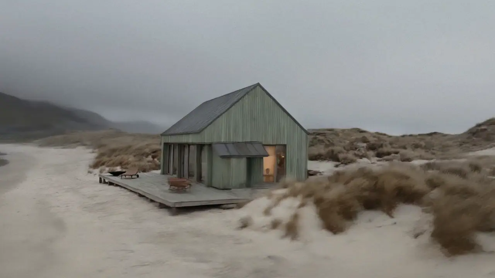
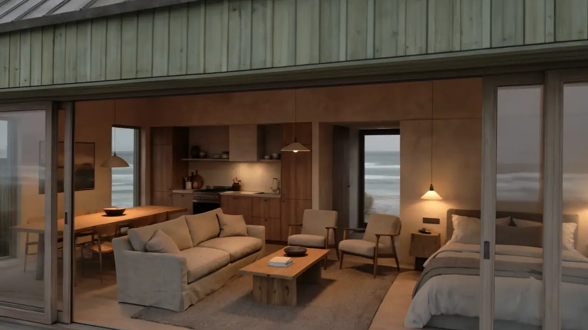
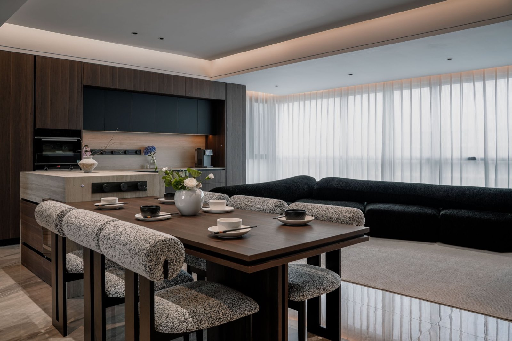
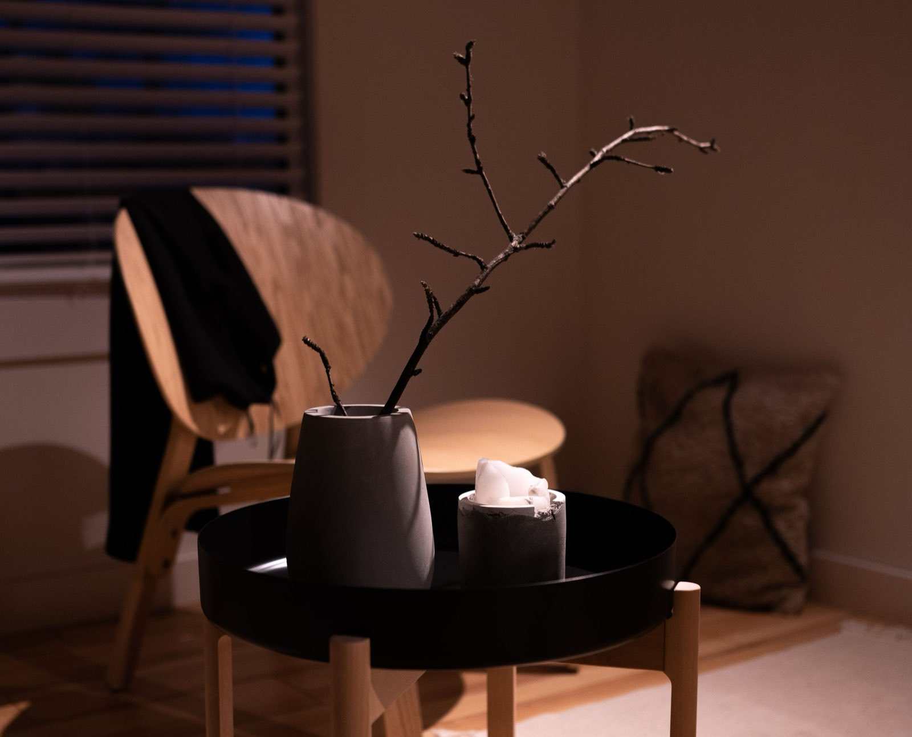
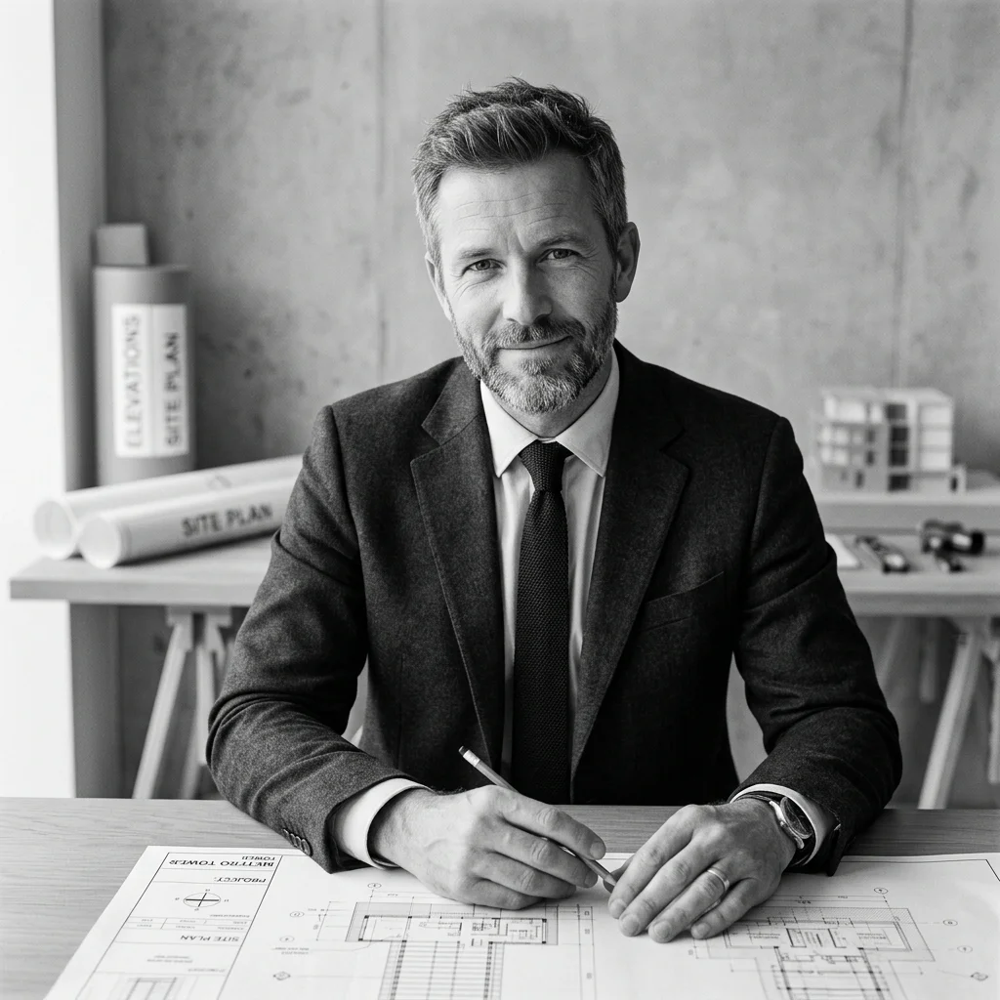

BeispielprojektWohnen in Berlin
HALM
Ein Wohnhaus in Berlin, das sich zum Licht hin öffnet. Große Fenster, ruhige Materialien und Grundrisse, in denen man ankommt.
- Bodentiefe Fenster
- Fußbodenheizung
- Eigener Freisitz
Exposéauf Anfrage
Beispielfilm · hier läuft Ihr Film Ein Haus, das dem Licht folgt. Klare Formen, große Glasflächen und Räume, in denen der Tag zur Ruhe kommt.

Jedes Maß hat einen Grund. Grundrisse, die sich nach Ihrem Alltag richten, und Details, die über Jahre halten.

Draußen Weite, drinnen Wärme. Die Fenster holen die Landschaft ins Haus, und jeder Raum wird zum Rückzugsort.

BeispielprojektWohnen in Berlin
Ein Wohnhaus in Berlin, das sich zum Licht hin öffnet. Große Fenster, ruhige Materialien und Grundrisse, in denen man ankommt.
Exposéauf Anfrage

Beispielwerte · hier stehen Ihre Zahlen

Wir bauen nur, was wir selbst bewohnen würden: mit Licht in jedem Raum, ehrlichen Materialien und der Zeit, die gute Details brauchen.
Ein Grundriss ist gut, wenn er auch in vielen Jahren noch passt. Deshalb planen wir Räume, die sich mit Ihrem Leben verändern können.
Wir sagen vorher, was wir bauen. Und wir bauen, was wir gesagt haben: vom ersten Gespräch bis zur Schlüsselübergabe.